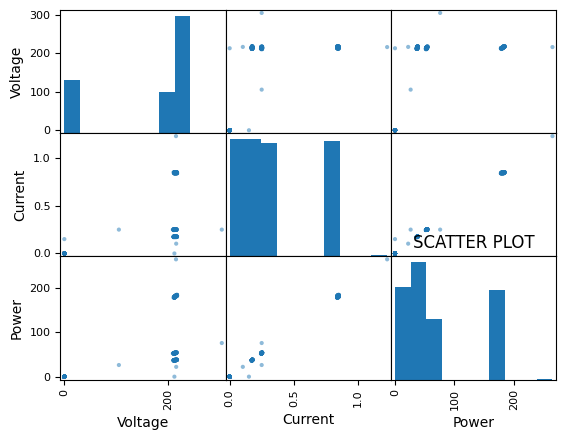
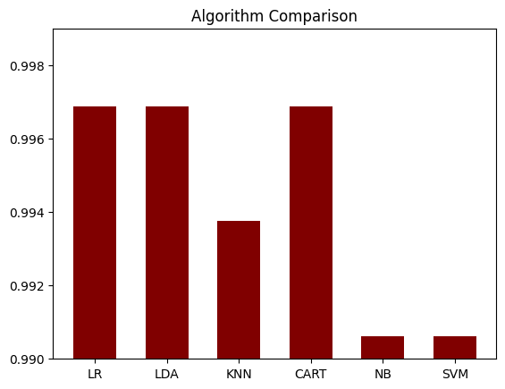

Energy Meter Classification
Author: Mohammed Adeen Shaik
Review date: 11 October 2026
Research question
How do six classification algorithms compare on the recorded energy-meter sample?
Data and provenance
Historical notebook outputs from 400 energy-meter observations; the source CSV is not included.
Source materials are linked from the repository README. Input fingerprints are recorded in the evidence manifest so a reader can identify the exact committed artifacts used in this review.
Method and analytical rationale
Voltage, current and power are used as predictors. The notebook first demonstrates an SVM split and then compares six algorithms through ten-fold stratified cross-validation on a separate training partition.
Findings and interpretation
Historical saved notebook outputs, not a fresh rerun. Ten-fold cross-validation on the 320-row training partition reports LR, LDA and CART at 0.996875 mean accuracy, KNN at 0.993750, and NB and SVM at 0.990625. The separate SVM holdout demonstration reports 0.985 accuracy on a different 50% split. Differences this small on a 400-row sample do not establish a reliable winning algorithm.
| Algorithm | Mean fold accuracy | Fold standard deviation |
|---|---|---|
| LR | 0.996875 | 0.009375 |
| LDA | 0.996875 | 0.009375 |
| KNN | 0.993750 | 0.018750 |
| CART | 0.996875 | 0.009375 |
| NB | 0.990625 | 0.020010 |
| SVM | 0.990625 | 0.020010 |
Limitations
The first SVM holdout and later cross-validation use different partitions and cannot be mixed into one benchmark. Repeated NoLoad observations may inflate row-level validation. Fold standard deviations are not confidence intervals. The data must be supplied before rerunning.
Reproduction
Use the setup commands and input contract in the repository README. Open the notebook catalogue for annotated code and saved outputs. Keep raw records and model binaries local; public reports contain aggregate results or source-embedded figures.
Final visual results

Figure from ML Algorithm comparison .ipynb, original code cell 21.
Figure from ML Algorithm comparison .ipynb, original code cell 21.

Figure from ML Algorithm comparison .ipynb, original code cell 31.